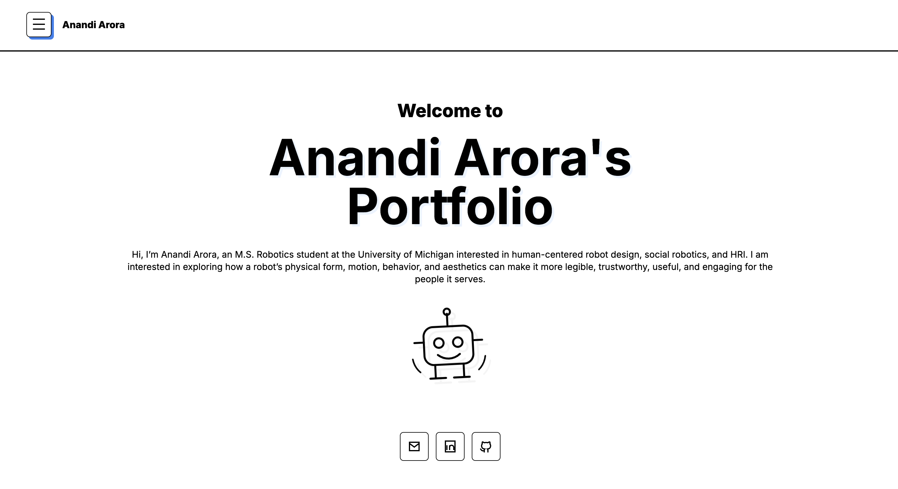
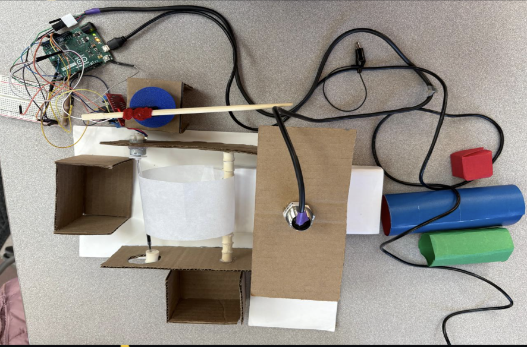

Welcome to
Anandi Arora's Portfolio
Hi, I’m Anandi Arora, an M.S. Robotics student at the University of Michigan interested in human-centered robot design, social robotics, and HRI. I am interested in exploring how a robot’s physical form, motion, behavior, and aesthetics can make it more legible, trustworthy, useful, and engaging for the people it serves.
About Me
I am an M.S. Robotics student at the University of Michigan with a background in artificial intelligence and a growing focus on human-centered robotics. My interests lie at the intersection of human-robot interaction, social robotics, embodied design, and real-world robotic systems. I want to explore how robots should look, move, and behave to be understandable, trustworthy, and useful in human environments. I am especially interested in the design side of HRI, where a robot’s physical form, motion, spatial behavior, and materiality are treated as central parts of the interaction, not just secondary features of the platform. Through coursework, research, and hands-on projects, I am building experience across software, hardware integration, prototyping, and robot deployment. I am motivated by robotics that directly supports people, whether through assistive systems, social robots, or human-centered technologies that make everyday interactions more meaningful and accessible.
Projects
Selected Work
Feb 2026 - Present
One Click to Safety: Reimagining Campus Security at UMich
A campus safety platform designed to help students access emergency resources and real-time support with fewer clicks.
- HCD
- Campus Safety
- UX Research
- Social Impact

Apr 2026 - May 2026
Smart Industrial Sort
Built a sensor-driven conveyor prototype that detects and sorts defective objects using Arduino, IR sensing, and servo actuation.
- Arduino
- Sensors
- Actuation
- Mechatronics
Jan 2026 - May 2026
Controller for QCars
Developed ROS-based trajectory tracking and centralized control for QCars using OptiTrack.
- ROS
- OptiTrack
- Control
- Multi-Robot
Nov 2025 - Dec 2025
A Hitchhiker's Guide to Robot Navigation
Benchmarked Leader-Follower robot navigation against MPC in dense simulated crowds.
- HRI
- Social Navigation
- MPC
- Python
Sep 2025 - Nov 2025
Wingmate Dating App
Designed the technical architecture and mobile deployment strategy for an AI-powered dating app.
- Architecture
- Product Strategy
- AI Apps
- Backend Design
Oct 2024 - May 2025
Wildlife Monitoring System
Built and deployed a YOLOv8-based wildlife detection system for identifying 12 animal species.
- YOLOv8
- Computer Vision
- Flask
- Deep Learning
Additional Projects
Survey Project
IoT-Based Smart Kitchen System
Surveyed IoT kitchen safety systems using gas, temperature, Arduino, GSM, and wireless communication technologies.
- IoT
- Arduino
- Sensors
- GSM
Data Analysis Project
Top 100 YouTube Channels Analysis
Used logistic regression and Scikit-learn to classify YouTube channel success based on subscriber metrics.
- Python
- Scikit-learn
- Logistic Regression
- Kaggle
Software Design Project
Music Management System
Designed UML diagrams and built a C++ object-oriented music management system for concert coordination.
- C++
- UML
- OOP
- System Design
Project Details
Overview
My Role
Tools & Technologies
Process / Method
Results / Outcome
Photos / Demo
Collaborators
Awards
Publication
Research and Writing
Object Detection Powered Wildlife Monitoring System
IEEE, June 20, 2025.
Related to the YOLOv8 wildlife monitoring project, covering object detection for identifying wildlife species through a deployed detection pipeline.
Fun Stuff
Outside of Robotics
Outside of robotics, I enjoy reading, writing poetry and reflections, trying new food places, visiting museums and bookstores, and staying active at the gym. I am also a trained Kathak dancer and love a good adventure.
Contact Me
Let’s build something thoughtful, useful, and memorable.
anandiar@umich.edu